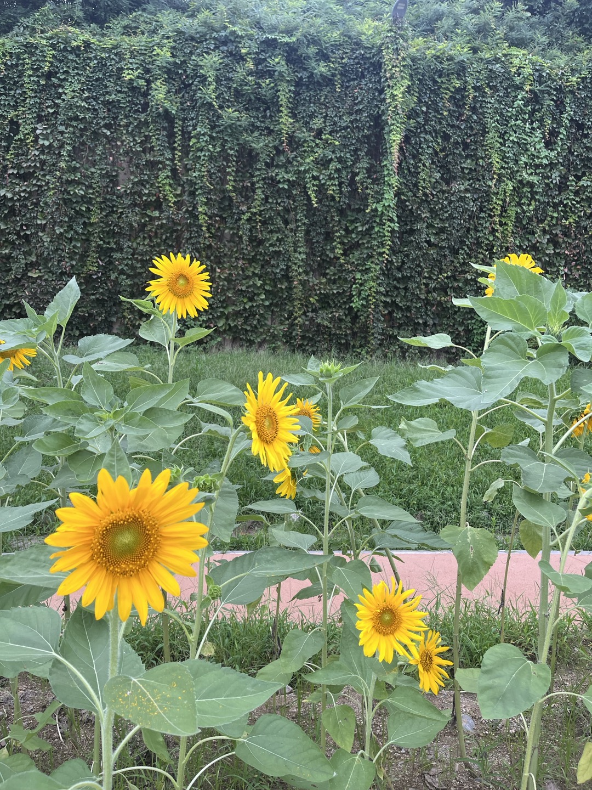

 20240206
세상에서 가장 현명한 사람은 모든 사람으로부터 배우는 사람이다 가장 사랑받는 사람은 칭찬하는 사람이다 가장 강한 사람은 감정을 조절할 줄 아는 사람이다
탈무드
절대 어제를 후회하지 마라 인생은 오늘의 나 안에 있고 내일은 스스로 만드는 것이다
L.론허바드
삶을 사는 데는 단 두 가지 방법이 있다. 하나는 기적이 전혀 없다고 여기는 것이고 또 다른 하나는 모든 것이 기적이라고 여기는 방식이다.
알베르트 아인슈타인